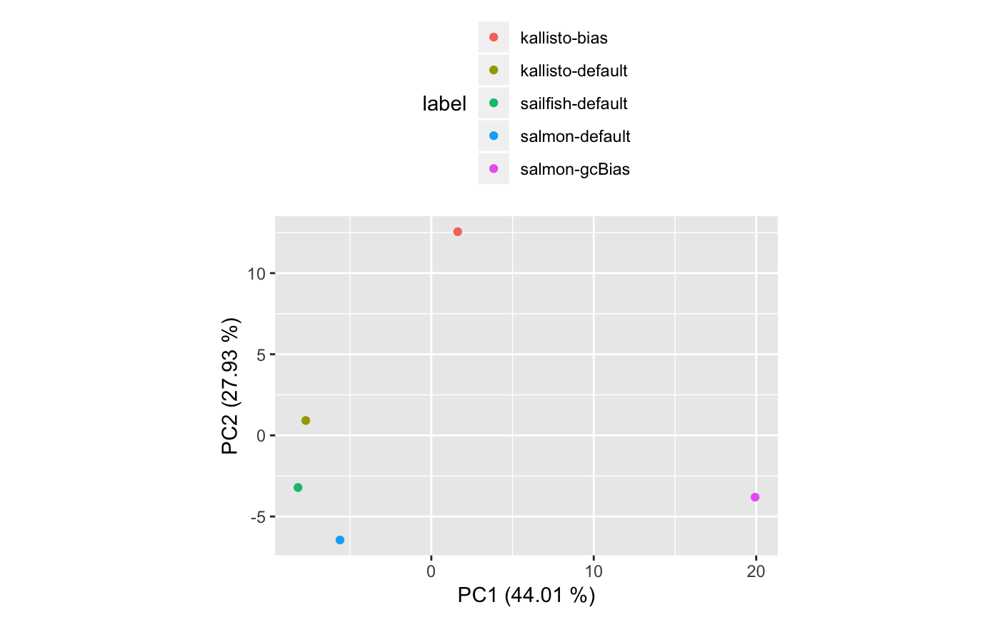

vignettes/CaseStudy-RNAseqQuantification.Rmd
CaseStudy-RNAseqQuantification.RmdAbstract
“In this vignette, we provide an example of how the SummarizedBenchmark framework can be used to benchmark software tools that are not necessarily implemented in R. Note that the objetive of this vignette is not to exhaustively benchmark these methods, but rather demonstrate the usage of SummarizedBenchmark when the methods are not implemented in R.”To demonstrate the use of SummarizedBenchmark to compare software that is not written in R, we will compare the output of sailfish, salmon and kallisto, three alignment-free methods for transcript isoform quantification. Due to running time, disk space, and memory issues, some parts of this vignette are not run during the package build. Instead, we provide pre-computed objects containing the final SummarizedBenchmark object.
We start by downloading the fastq files that we will use as input to quantify isoforms. We will use two samples from two brain replicates from the Mouse BodyMap (Li et al. 2017).
library(BiocParallel)
dir.create("fastq", showWarnings = FALSE)
extractSRA <- function(sra_accession, exe_path = 'fastq-dump',
args = '--split-3 --gzip', outdir = 'fastq',
dry_run = FALSE) {
cmdline = sprintf('%s %s --outdir %s %s',
exe_path, args, outdir, sra_accession)
if (dry_run) {
message("will run with this command line:\n", cmdline)
} else {
return(system(cmdline))
}
}
samples <- c("SRR5273705", "SRR5273689", "SRR5273699", "SRR5273683")
bplapply(samples, extractSRA, BPPARAM = MulticoreParam(4))
annotation <- data.frame(samples,
tissue = c("brain", "brain", "heart", "heart"))Each of the three methods (salmon, sailfish and kallisto) require an indexing step for the reference transcriptome. We will use mouse annotations from the Gencode project. The code below downloads the mouse reference transcriptome.
dir.create("reference/raw", recursive = TRUE, showWarnings = FALSE)
download.file("ftp://ftp.sanger.ac.uk/pub/gencode/Gencode_mouse/release_M16/gencode.vM16.transcripts.fa.gz",
destfile = "reference/raw/transcriptome.fa.gz")Finally, we use the code below to build the transcriptome indices for the three different methods.
dir.create("reference/index", showWarnings = FALSE)
system("kallisto index -i reference/index/kallistoIdx.idx reference/raw/transcriptome.fa.gz")
system("salmon index -t reference/raw/transcriptome.fa.gz -i reference/index/salmon_index")
system("gunzip -c reference/raw/transcriptome.fa.gz > reference/raw/transcriptome.fa && sailfish index -t reference/raw/transcriptome.fa -o reference/index/sailfish_index")
library(Biostrings)
dnSt <- names(readDNAStringSet("reference/raw/transcriptome.fa.gz"))
dnSt <- sapply(strsplit(dnSt, "\\||\\."), "[[", 1)If we want to use the BenchDesign infrastructure to compare tools that are run via the command line, we need to implement functions in R containing the system calls to the command line. Such functions must also collect the output of the methods and import them into R. To begin, we implement three functions that enable us to retrieve the version of the software that we will be running.
library(SummarizedBenchmark)
getKallistoVersion <- function() {
vers <-
suppressWarnings(system("kallisto", intern = TRUE)[1])
strsplit(vers, " ")[[1]][2]
}
getSalmonVersion <- function() {
vers <-
suppressWarnings(system("salmon --version 2>&1", intern = TRUE)[1])
strsplit(vers, " ")[[1]][2]
}
getSailfishVersion <- function() {
vers <-
suppressWarnings(system("sailfish --version 2>&1", intern = TRUE)[1])
strsplit(vers, " ")[[1]][3]
}Similarly, we can define R wrapper functions to run the different methods. Note that the functions below have three important characteristics. (1) They receive as input the arguments to the different methods such that buildBench can keep track of these, (2) they contain system calls that run the different methods and (3) they import the output of the different methods into R (in this case, using the tximport package).
dir.create("out/kallisto", showWarnings = FALSE)
dir.create("out/salmon", showWarnings = FALSE)
dir.create("out/sailfish", showWarnings = FALSE)
runKallisto <- function(sample, args = "") {
fastqFile1 <- sprintf( "fastq/%s_1.fastq.gz", sample)
fastqFile2 <- gsub( "_1", "_2", fastqFile1)
output <- sprintf("out/kallisto/%s.out", sample)
cmd <- sprintf("kallisto quant -i reference/index/kallistoIdx.idx -o %s %s %s %s",
output, args, fastqFile1, fastqFile2)
system(cmd)
require(tximport)
ab <- tximport(file.path(output, "abundance.h5"),
type = "kallisto", txOut = TRUE)
counts <- ab$counts[, 1]
names(counts) <- sapply(strsplit(names(counts), "\\||\\."), "[[", 1)
counts
}
runSalmon <- function(sample, args = "-l A -p 4") {
fastqFile1 <- sprintf("fastq/%s_1.fastq.gz", sample)
fastqFile2 <- gsub( "_1", "_2", fastqFile1)
output <- sprintf("out/salmon/%s.out", sample)
cmd <- sprintf("salmon quant -i reference/index/salmon_index %s -o %s -1 %s -2 %s",
args, output, fastqFile1, fastqFile2)
system(cmd)
require(tximport)
counts <- tximport(file.path(output, "quant.sf"),
type = "salmon", txOut = TRUE)$counts[, 1]
names(counts) <- sapply(strsplit(names(counts), "\\||\\."), "[[", 1)
counts
}
runSailfish <- function(sample, args = "-l IU") {
fastqFile1 <- sprintf( "fastq/%s_1.fastq.gz", sample)
fastqFile2 <- gsub( "_1", "_2", fastqFile1)
output <- sprintf("out/sailfish/%s.out", sample)
cmd <- sprintf("echo \"sailfish quant -i reference/index/sailfish_index %s -o %s -1 <(zcat %s) -2 <(zcat %s)\" | bash",
args, output, fastqFile1, fastqFile2)
cat(cmd)
system(cmd)
counts <- tximport(file.path(output, "quant.sf"),
type = "sailfish", txOut = TRUE)$counts[, 1]
names(counts) <- sapply(strsplit(names(counts), "\\||\\."), "[[", 1)
counts
}Having defined these functions, we can now design our benchmark experiment using the BenchDesign() and addMethod() functions. For this specific experiment, we will run salmon, sailfish and kallisto. In addition, we will run kallisto and salmon both with default parameters and with their respective options to model for sequencing bias.
library(SummarizedBenchmark)
library(tximport)
b <- BenchDesign() %>%
addMethod(label = "kallisto-default",
func = runKallisto,
params = rlang::quos(sample = sample,
args = "-t 16"),
meta = list(pkg_vers = rlang::quo(getKallistoVersion()))
) %>%
addMethod(label = "kallisto-bias",
func = runKallisto,
params = rlang::quos(sample = sample,
args = "--bias -t 16"),
meta = list(pkg_vers = rlang::quo(getKallistoVersion()))
) %>%
addMethod(label = "salmon-default",
func = runSalmon,
params = rlang::quos(sample = sample,
args = "-l IU -p 16"),
meta = list(pkg_vers = rlang::quo(getSalmonVersion()))
) %>%
addMethod(label = "salmon-gcBias",
func = runSalmon,
params = rlang::quos(sample=sample,
args="-l IU --gcBias -p 16"),
meta = list(pkg_vers = rlang::quo(getSalmonVersion()))
) %>%
addMethod(label = "sailfish-default",
func = runSailfish,
params = rlang::quos(sample=sample,
args="-l IU -p 16"),
meta = list(pkg_vers = rlang::quo(getSailfishVersion()))
)
printMethods(b)Now, the next step is to run the benchmark experiment. Since we are running the benchmark for two samples, we use an lapply() to loop over the sample names, run the benchmark experiment for each of them, and combine them using cbind().
dat <- list(txIDs = dnSt)
allSB <- lapply(samples, function(sample) {
dat[["sample"]] <- sample
sb <- buildBench(b, data = dat, sortIDs = "txIDs",
catchErrors = FALSE, parallel = TRUE,
BPPARAM = SerialParam())
colData( sb )$sample <- sample
colData( sb )$tissue <- as.character(annotation$tissue[annotation$sample == sample])
sb
})To keep the pre-computed object small, we will save the quantifications for only 50,000 randomly sampled transcripts.
keepRows <- sapply(allSB, function(x) { rowSums(is.na(assay(x))) })
keepRows <- rowSums(keepRows) == 0
allSB <- lapply(allSB, function(x) { x[keepRows, ] })
set.seed(12)
keepRows <- sample(seq_len(nrow(allSB[[1]])), 50000)
allSB <- lapply(allSB, function(x) { x[keepRows, ] })
#save(allSB, file = "../data/quantSB.rda",
# compress = "xz", compression_level = 9)The resulting allSB object has been precomputed and can be loaded by doing
Notice that each element of the list contains a SummarizedBenchmark object in which the colData() contains both software versions and used parameters.
## DataFrame with 5 rows and 4 columns
## param.args meta.version sample
## <character> <character> <character>
## kallisto-default "-t 16" 0.43.1 SRR5273705
## kallisto-bias "--bias -t 16" 0.43.1 SRR5273705
## salmon-default "-l IU -p 16" 0.9.1 SRR5273705
## salmon-gcBias "-l IU --gcBias -p 16" 0.9.1 SRR5273705
## sailfish-default "-l IU -p 16" 0.10.0 SRR5273705
## tissue
## <character>
## kallisto-default brain
## kallisto-bias brain
## salmon-default brain
## salmon-gcBias brain
## sailfish-default brainThe code above returns a SummarizedBenchmark object containing the transcript isoform quantification results for the two samples. In this comparison, however, we don’t have a ground truth. However, having all the results in a single SummarizedBenchmark container facilitates the exploration of these results. For example, using a few lines of code, we can explore the similarity of the three methods using a standard dimensionality reduction technique (PCA).
keep <- !rowSums( is.na( assays( allSB[[1]] )[["default"]] ) ) > 0
pcaRes <-
prcomp( log10( t( assays( allSB[[1]] )[["default"]][keep,] ) + 1 ) )
varExp <- round( 100*(pcaRes$sdev/sum( pcaRes$sdev )), 2)
tidyData <- data.frame(
PC1=pcaRes$x[,"PC1"],
PC2=pcaRes$x[,"PC2"],
sample=colData( allSB[[1]] )$sample,
label=gsub("\\d+$", "", rownames( colData(allSB[[1]]) ) ) )
tidyData <- tidyData %>%
dplyr::mutate(
method=gsub( "-.*$", "", label) )
tidyData %>%
ggplot( aes( PC1, PC2, colour=label ) ) +
geom_point() + coord_fixed() +
ylab(sprintf( "PC2 (%0.2f %%)", varExp[2]) ) +
xlab(sprintf( "PC1 (%0.2f %%)", varExp[1]) ) +
theme(legend.pos="top") +
guides(col = guide_legend(nrow = 5),
shape = guide_legend(nrow = 4))
For a more exhaustive benchmark of isoform quantification results, we refer the reader to the paper by (Teng et al. 2016), which describes several metrics to evaluate the performance of isoform quantification pipelines. These metrics are implemented in rnaseqcomp. The code below follows the steps from the rnaseqcomp package to create an rnaseqcomp object. We recommend the readers to follow the vignette of the rnaseqcomp package for an exhaustive benchmark of isoform quantification methods.
library(rnaseqcomp)
library(biomaRt)
data(simdata)
houseHuman <- simdata$meta$gene[simdata$meta$house]
houseHuman <- gsub("\\.\\d+", "", houseHuman )
mart <- useMart( "ensembl", "mmusculus_gene_ensembl" )
geneMap <- getBM( c( "ensembl_transcript_id",
"hsapiens_homolog_ensembl_gene",
"hsapiens_homolog_orthology_type" ),
mart = mart)
geneMap <-
geneMap[geneMap$`hsapiens_homolog_orthology_type` == "ortholog_one2one",]
houseMouse <-
geneMap$ensembl_transcript_id[geneMap$hsapiens_homolog_ensembl_gene %in%
houseHuman]
allSB <- do.call( cbind, allSB )
colData( allSB )$label <- gsub("\\d+$", "", rownames( colData( allSB ) ) )
condInfo <-
colData( allSB )[colData( allSB )$label == "kallisto-default","tissue"]
replicateInfo <- condInfo
evaluationFeature <- rep( TRUE, length.out = nrow( allSB ) )
calibrationFeature <- rownames(allSB) %in% houseMouse
unitReference <- 1
quantificationList <- lapply(
split( seq_along( colnames( allSB ) ), colData( allSB )$label ),
function(x) { assay( allSB )[,x] })
compObject <- signalCalibrate(
quantificationList,
factor(condInfo), factor(replicateInfo),
evaluationFeature, calibrationFeature, unitReference,
calibrationFeature2 = calibrationFeature)
compObjectLi, Bin, Tao Qing, Jinhang Zhu, Zhuo Wen, Ying Yu, Ryutaro Fukumura, Yuanting Zheng, Yoichi Gondo, and Leming Shi. 2017. “A Comprehensive Mouse Transcriptomic Bodymap Across 17 Tissues by Rna-Seq.” Scientific Reports 7 (1). https://doi.org/10.1038/s41598-017-04520-z.
Teng, Mingxiang, Michael I. Love, Carrie A. Davis, Sarah Djebali, Alexander Dobin, Brenton R. Graveley, Sheng Li, et al. 2016. “A Benchmark for Rna-Seq Quantification Pipelines.” Genome Biology 17 (1). https://doi.org/10.1186/s13059-016-0940-1.